Ubuntu 入门操作指南
作者：TeliuTe 来源：基础教程网
四、顶部面板 返回目录 下一课顶部面板在桌面的最上边，显示当前程序的标题和菜单，右侧是通知区域和关机按钮；
1、顶部面板
1）在屏幕的最上边，打开一个程序后，就会显示程序的名称；
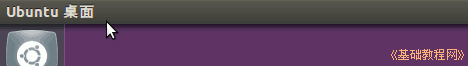
2）把鼠标移到名称那儿，就会出现程序的菜单栏，移开菜单消失，在桌面空白处点击会显示桌面文件夹的菜单；
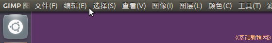
3）面板右侧是通知区域，显示有输入法图标，点击可以切换到中文输入法，灰色时是英文状态，变亮时是中文输入法；
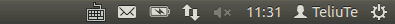 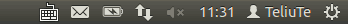
4）旁边有一个双箭头的是网络连接、，如果是空心的扇形就是无连接，点击选择DSL 连接，或者是有线连接，检查网线是否接好；
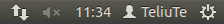 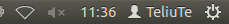
5）旁边的小喇叭是音量图标，如果打叉了就是静音，点击把音量拖大一些，或者点击“取消静音”；
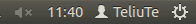 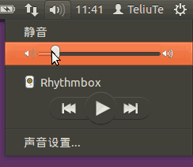
6）旁边显示的是时间，点击可以查看日期和日历，再点一下关闭日期面板；
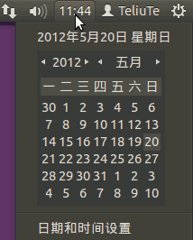
7）旁边是用户名，点击可以切换账号，或者进入“用户账户”面板，再点一次关闭面板；
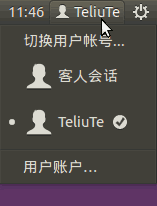
8）最右边是关机按钮，形状像一个齿轮，点击显示关机类型，可以选择注销、挂起、休眠、重启动或者关闭计算机；
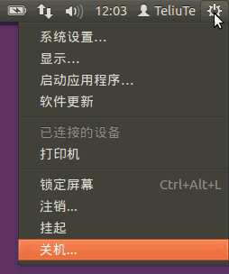
本节学习了顶部面板的基础知识，如果你成功地完成了练习，请继续学习下一课内容；
本教程由86团学校TeliuTe制作|著作权所有
基础教程网：http://teliute.org/
美丽的校园……
转载和引用本站内容，请保留版权信息和本站链接。